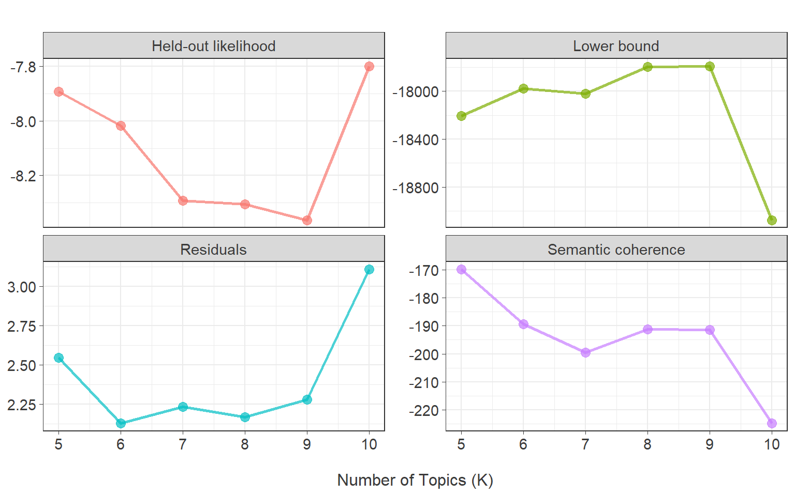
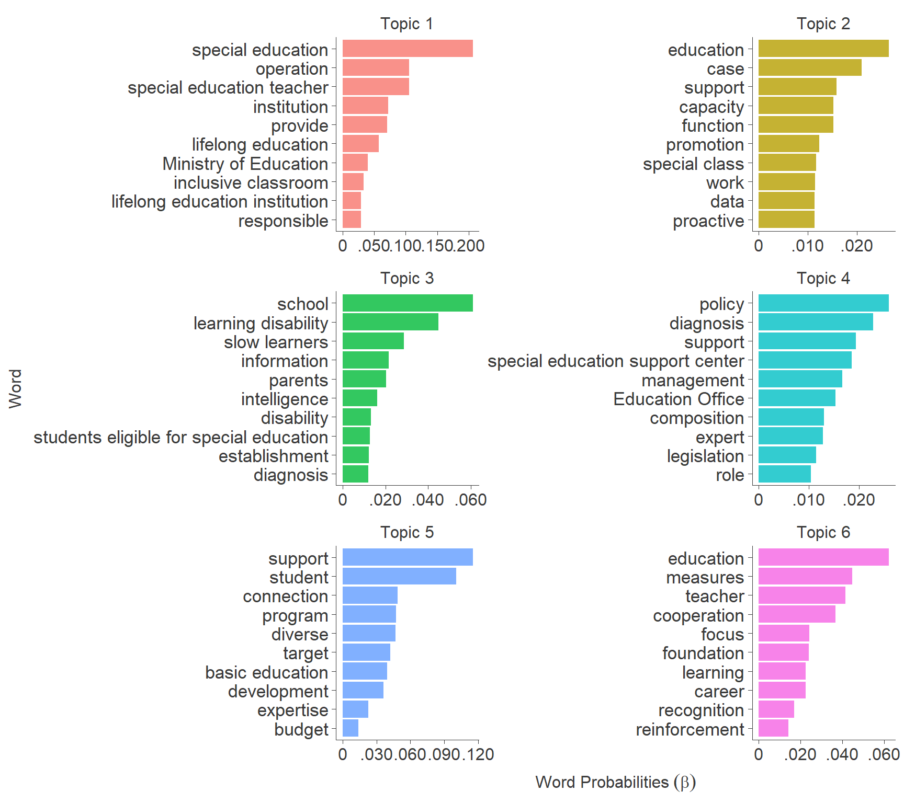
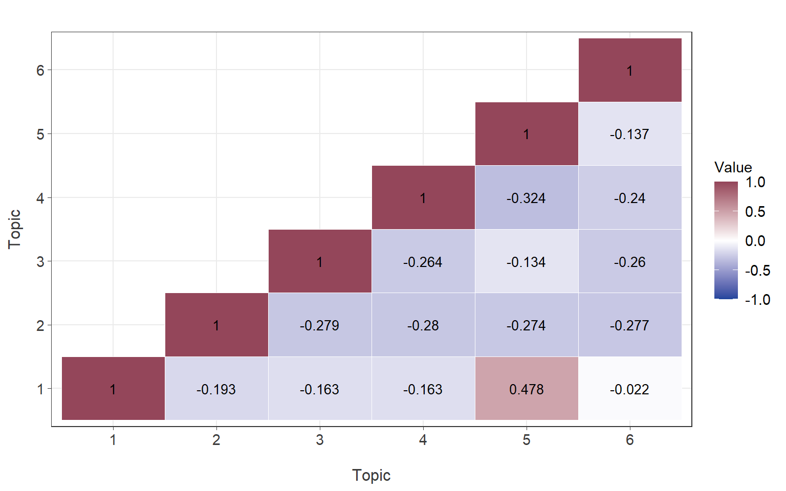

# suppressWarnings({
# install.packages("readxl", "tidyverse", "dplyr", "tidytext", "stringr", "ggplot2", "plotly", "stm", "DT", "purrr", "furrr", "future", "tidyr", "reshape2", "stminsights", "numform")
# devtools::install_github('haven-jeon/KoNLP')
# devtools::install_github("mshin77/TextAnalysisR")
# })Code
1. Set Up
1.1. Install R Packages
1.2. Load R Packages
Code
suppressPackageStartupMessages({
library(magrittr)
library(readxl)
library(tidyverse)
library(dplyr)
library(KoNLP)
library(tidytext)
library(stringr)
library(ggplot2)
library(TextAnalysisR)
library(plotly)
library(stm)
library(DT)
library(purrr)
library(furrr)
library(future)
library(tidyr)
library(reshape2)
library(stminsights)
library(numform)
})
suppressWarnings(library(tidyverse))1.3. Load Dataset
# delphi_data <- read_excel("data/delphi_data.xlsx")
load("data/delphi_data.RData")1.4. Functions for Preprocessing of Hangul
Code
# This function is to remove specific patterns from a text column.
#
# @param {data} The input dataframe.
# @param {text_col} The name of the text column in the dataframe.
# @param {...} Additional arguments to be passed to the function.
# @return The cleaned dataframe with an additional processed_text column.
rm_patterns <- function(data, text_col, ...) {
homepage <- "(HTTP(S)?://)?([A-Z0-9]+(-?[A-Z0-9])*\\.)+[A-Z0-9]{2,}(/\\S*)?"
date <- "(19|20)?\\d{2}[-/.][0-3]?\\d[-/.][0-3]?\\d"
phone <- "0\\d{1,2}[- ]?\\d{2,4}[- ]?\\d{4}"
email <- "[A-Z0-9.-]+@[A-Z0-9.-]+"
hangule <- "[ㄱ-ㅎㅏ-ㅣ]+"
punctuation <- "[:punct:]"
text_p <- "[^가-힣A-Z0-9]"
cleaned_data <- data %>%
mutate(
processed_text = !!sym(text_col) %>%
str_remove_all(homepage) %>%
str_remove_all(date) %>%
str_remove_all(phone) %>%
str_remove_all(email) %>%
str_remove_all(hangule) %>%
str_replace_all(punctuation, " ") %>%
str_replace_all(text_p, " ") %>%
str_squish()
)
return(cleaned_data)
}
# This function is to extract morphemes (noun and verb families).
#
# @param {data} The input data to be processed.
# @param {text_col} The name of the text column in the dataframe.
# @returns {pos_td} The processed data containing the extracted nouns and verbs.
extract_pos <- function(data, text_col) {
pos_init <- data %>%
unnest_tokens(pos_init, text_col, token = SimplePos09) %>%
mutate(pos_id = row_number())
noun <- pos_init %>%
filter(str_detect(pos_init, "/n")) %>%
mutate(pos = str_remove(pos_init, "/.*$"))
verb <- pos_init %>%
filter(str_detect(pos_init, "/p")) %>%
mutate(pos = str_replace_all(pos_init, "/.*$", "다"))
pos_td <- bind_rows(noun, verb) %>%
arrange(pos_id) %>%
filter(nchar(pos) > 1) %>%
tibble()
return(pos_td)
}
# Calculates the term frequency-inverse document frequency (TF-IDF) for a given dataset.
#
# @param data The dataset to calculate TF-IDF on.
# @param pos The column name representing the term positions.
# @param document The column name representing the documents.
# @param ... Additional arguments to be passed to the function.
# @return A datatable displaying the TF-IDF values, sorted in descending order.
calculate_tf_idf <- function(data, pos, document, ...) {
tf_idf <- data %>%
bind_tf_idf(pos, document, n) %>%
arrange(desc(tf_idf)) %>%
mutate_if(is.numeric, ~ round(., 3))
tf_idf_dt <- tf_idf %>%
datatable(options = list(
pageLength = 5,
initComplete = JS(
"
function(settings, json) {
$(this.api().table().header()).css({
'font-family': 'Arial, sans-serif',
'font-size': '16px',
});
}
"
)
)) %>%
formatStyle(columns = colnames(.$x$data), `font-size` = "15px")
return(tf_idf_dt)
}1.5. Preprocess Hangul Text
delphi_processed_init <- delphi_data %>%
rm_patterns(text_col = "item") %>%
extract_pos(text_col = "processed_text") 1.6. Identify Commonly Observed Words
top_20_pos <- delphi_processed_init %>%
count(pos) %>%
arrange(desc(n)) %>%
head(20)
top_20_pos$pos <- c("support", "regarding", "student", "for", "through", "education", "special education", "fall", "target", "school", "linkage", "various", "program", "exist", "related", "measure", "cooperation", "basic academic ability", "learning disabilities", "teacher")
top_20_pos_gg <- ggplot(top_20_pos, aes(x = reorder(pos, n), y = n)) +
geom_point() +
coord_flip() +
labs(x = NULL, y = "Word Counts") +
theme_bw() +
theme(axis.title.x = element_text(size = 11),
axis.title.y = element_text(size = 11),
axis.text.x = element_text(size = 11),
axis.text.y = element_text(size = 11))
top_20_pos_gg %>% ggplotly()1.7. Remove Stopwords
stop_words <- c("가다", "같다", "같습니다", "같습니", "경우", "관련", "관하다", "대하다", "따르다", "되다", "많다", "맞다", "못하다", "받다", "보입니다", "보입니", "않다", "아니다", "없다", "열다," "위하다", "이루다", "이후", "있다", "지다", "지니다", "좋겠습니", "좋다", "통하다", "피다", "하다")
delphi_processed_init$pos <- case_when(
delphi_processed_init$pos== "학생들" ~ "학생",
delphi_processed_init$pos== "학부모들이" ~ "학부모",
TRUE ~ as.character(delphi_processed_init$pos)
)1.8. Create a Document-Term Matrix
delphi_processed_init$item_id <- paste("item", delphi_processed_init$item_id, sep="_")
delphi_dfm <- delphi_processed_init %>%
filter(!pos %in% stop_words) %>%
count(item, pos, sort = TRUE) %>%
cast_dfm(item, pos, n)2. Model Diagnostics
2.1. Identify Optimal Topic Numbers
Code
delphi_dfm@docvars$policy_topic <- as.factor(delphi_data$policy_topic)
suppressPackageStartupMessages({
# 참고 문헌: https://juliasilge.com/blog/evaluating-stm/
K_search <- tibble(K = 5:10) %>%
mutate(topic_model = future_map(K, ~stm(delphi_dfm, K = .x, prevalence = ~ policy_topic,
max.em.its = 75,
init.type = "Spectral",
verbose = FALSE,
seed = 1234)))
})
heldout <- make.heldout(delphi_dfm)
K_result <- K_search %>%
mutate(
exclusivity = map(topic_model, exclusivity),
semantic_coherence = map(topic_model, semanticCoherence, delphi_dfm),
eval_heldout = map(topic_model, eval.heldout, heldout$missing),
residual = map(topic_model, checkResiduals, delphi_dfm),
bound = map_dbl(topic_model, ~max(.x$convergence$bound)),
lfact = map_dbl(topic_model, ~lfactorial(.x$settings$dim$K)),
lbound = bound + lfact,
iterations = map_dbl(topic_model, ~length(.x$convergence$bound))
)
2.2. Structural Topic Modeling
topic_model <- stm(delphi_dfm, K = 6,
prevalence = ~ policy_topic,
max.em.its = 75,
init.type = "Spectral",
verbose = FALSE,
seed = 1234)3. Word Probabilities
3.1. Probability of Words Observed in Each Topic (Beta)
Code
tidy_beta <- tidy(topic_model,
matrix = "beta",
document_names = rownames(delphi_dfm),
log = FALSE)
tidy_beta_table <- tidy_beta %>%
mutate(beta = round(beta, 3)) %>%
arrange(topic, desc(beta), .by_group = TRUE) 3.2. Top 10 Associated Words per Topic
Code
top_term <- tidy_beta %>%
examine_top_terms(top_n = 10)
top_term$term <- c("reinforcement", "development", "management", "teacher",
"education", "education", "Ministry of Education",
"Education Office", "composition", "establishment",
"institution", "function", "foundation", "basic education",
"slow learners", "diverse", "responsible", "target", "measures",
"legislation", "case", "work", "capacity", "role", "connection",
"budget", "operation", "recognition", "data", "disability",
"proactive", "expert", "expertise", "information", "policy", "provide",
"focus", "intelligence", "support", "support", "support", "diagnosis",
"diagnosis", "career", "inclusive classroom", "special education teacher",
"special education", "students eligible for special education",
"special education support center", "special class", "lifelong education",
"lifelong education institution", "program", "school", "parents", "student",
"learning", "learning disability", "cooperation", "promotion")
top_term %>% plot_topic_term(ncol = 2) +
labs(x = "Word", y = expression("Word Probabilities"~(beta))) +
theme(axis.text.y = element_text(size = 13, color = "#3B3B3B"))
4. Topic Proportions
4.1. Probability of Topics per Document (Gamma)
Code
tidy_gamma <- tidy(topic_model,
matrix = "gamma",
document_names = rownames(delphi_dfm), log = FALSE)
tidy_gamma_table <- tidy_gamma %>%
mutate(gamma= round(gamma, 3)) %>%
arrange(topic, desc(gamma), .by_group = TRUE) 4.2. Correlations Between Topics
Code
extract_lower_tri <- function(x){
x[upper.tri(x)] <- NA
return(x)
}
corr <- topicCorr(topic_model) %>% .$cor %>%
extract_lower_tri() %>%
melt(na.rm = T) %>%
ggplot(aes(x = factor(Var1),
y = factor(Var2),
fill = value)) +
geom_tile(color = "white") +
scale_fill_gradient2(name = "Value",
low = "#1f459c", high = "#94465a", mid = "white",
midpoint = 0,
limit = c(-1, 1), space = "Lab") +
geom_text(aes(Var1, Var2, label = round(value, 3)), color = "black", size = 3.5) +
labs(x = "Topic", y = "Topic",
title = "") +
theme_bw() +
theme(
axis.line = element_line(color = "#3B3B3B", linewidth = 0.3),
axis.ticks = element_line(color = "#3B3B3B", linewidth = 0.3),
strip.text.x = element_text(size = 11, color = "#3B3B3B"),
axis.text.x = element_text(size = 11, color = "#3B3B3B"),
axis.text.y = element_text(size = 11, color = "#3B3B3B"),
axis.title = element_text(size = 11, color = "#3B3B3B"),
axis.title.x = element_text(size = 12, margin = margin(t = 15)),
axis.title.y = element_text(size = 12, margin = margin(r = 10)),
legend.title = element_text(size = 11),
legend.text = element_text(size = 11))